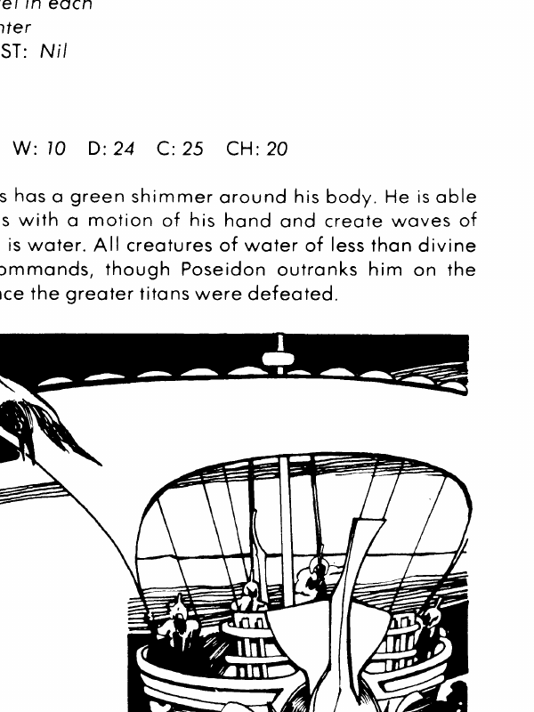

其他英雄与海神
潘 Pan 是混乱中立自然神，AC −2，生命值 359；声音可制造恐惧，牧笛能魅惑或令百英尺内所有生物逃跑。波塞冬 Poseidon 是混乱中立强大神，AC 3，生命值 390，魔法抗性 75%；+5 三叉戟每轮两次各造成 4–40 加 14 点伤害，可吸收并返还一道法术，还能制造海啸、地震和水生生命。奥德修斯 Odysseus 是混乱善良英雄，AC 2，生命值 83，以强弓和智谋著称；忒修斯 Theseus 是守序善良英雄，AC 4，生命值 103，曾击败弥诺陶洛斯。耐克 Nike 是守序中立胜利女神，AC −4，生命值 357；能以权杖造成 5–50 点伤害并触摸摧毁魔法装置。提喀 Tyche 是中立善良幸运女神，AC −3，生命值 200，能施放“好运”，以蓝球吸收并反弹一次攻击。
